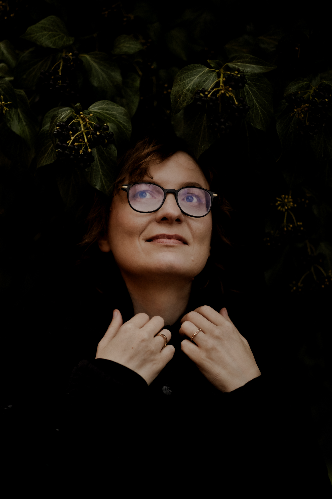

Katarzyna Brochocka – kompozytorka, librecistka i pianistka. Autorka oper, pieśni, utworów orkiestrowych, kameralnych oraz muzyki teatralnej. Jej dzieła, wydawane od 2022 roku przez Universal Edition, są regularnie prezentowane w kraju i za granicą. Realizowała zamówienia m.in. Narodowego Forum Muzyki we Wrocławiu oraz Filharmonii Warmińsko-Mazurskiej w Olsztynie. Jest laureatką międzynarodowych konkursów w Polsce, USA, Austrii, Włoszech i Anglii. W 2021 roku uzyskała stopień doktora sztuk muzycznych na Wydziale Kompozycji i Teorii Muzyki Uniwersytetu Muzycznego Fryderyka Chopina w Warszawie. Dyskografia artystki obejmuje trzy albumy wydane nakładem wytwórni CD Accord: Brochocka, Weinberg: Double Bass Works (2015), Młoda mężatka / The Young Wife (2020) oraz Brochocka: Unquiet Heart (2025).
Katarzyna Brochocka – composer, librettist, and pianist. She is the author of operas, songs, orchestral and chamber works, and theater music. Her works, published by Universal Edition, are regularly presented in Poland and abroad. She has completed commissions from venues including the National Forum of Music in Wrocław and the Warmia-Masuria Philharmonic in Olsztyn. She has won international competitions in Poland, the USA, Austria, Italy, and England. In 2021, she earned a Doctor of Musical Arts degree from the Department of Composition and Music Theory at the Fryderyk Chopin University of Music in Warsaw. Her discography includes three albums released on CD Accord: Brochocka, Weinberg: Double Bass Works (2015), Młoda mężatka / The Young Wife (2020), and Brochocka: Unquiet Heart (2025).
Oficjalny katalog dzieł – w tym utwory wielkoorkiestrowe, operowe oraz kameralne – jest zarządzany przez Universal Edition. Zakup partytur PDF/Print oraz wypożyczenia materiałów koncertowych dla filharmonii i teatrów realizowane są bezpośrednio przez platformę wydawcy.
Browse CatalogueAutorskie nagrania płytowe kompozytorki podlegają oficjalnej dystrybucji globalnej (NAXOS) oraz krajowej (Universal Music Poland). Dostępne w sprzedaży fizycznej oraz w międzynarodowych bazach streamingowych.
Listen WorldwideWszystkie zamówienia kompozytorskie (muzyka autonomiczna, sceniczna, projekty interdyscyplinarne) realizowane są wyłącznie na podstawie oficjalnych umów, uwzględniających profesjonalne stawki autorskie oraz przekazanie praw zależnych. Zlecenia o charakterze spekulacyjnym (non-profit / pro bono) nie są rozpatrywane.
Zapytania dotyczące nowych utworów, terminów prapremier oraz instrumenta cji prosimy kierować drogą mailową: